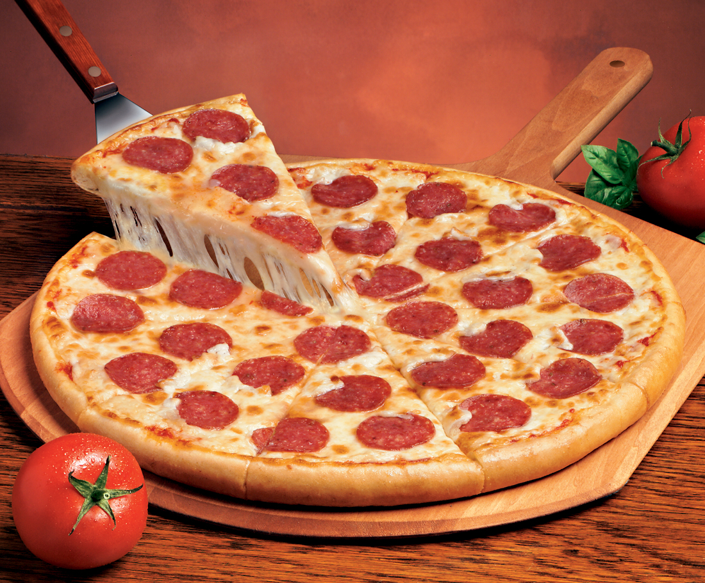

Delicious Pizza Recipe

INTRODUCTION
"Pizza from scratch in under an hour. Much better than the ones you buy! Use your favorite toppings."
INGREDIENTS
Dough
- 2 ½ cups flour
- 1 teaspoon salt
- 1 tablespoon fast rise yeast
- 1 cup water (50°C)
- 1 tablespoon oil
Topping
- ¼ cup tomato sauce
- 1 teaspoon Italian seasoning
- ½ teaspoon garlic powder
- ½ teaspoon salt
- ⅛ teaspoon pepper
- 1 ½ cups pepperoni slices
- 1 cup shredded mozzarella cheese
- 1 cup shredded Monterey jack cheese
- 3 tablespoons grated parmesan cheese
DIRECTIONS
- In large bowl, mix first 4 ingredients.
- Mix water and oil; add to flour mixture.
- Turn onto floured surface; knead for 2 minutes.
- Place in a greased bowl; turning to grease top.
- Cover and let rise for 20 minutes.
- Punch down; place on 12in, greased pizza pans.
- Pat into a circle.
- Topping: Mix first 5 ingredients and spread over crust.
- Put a few pepperoni slices on top of sauce.
- Sprinkle with ½ the mozzarella; ½ the Monterey jack, and ½ the parmesan.
- Put the rest of the pepperoni on.
- Repeat the cheese layer.
- Bake at 200°C for 20 minutes or until light brown.